Very brief comments on the next three years.
~/crumplab
Computational Cognition Lab
The Computational Cognition Lab at Brooklyn College of CUNY investigates learning, memory, attention, performance, and semantic cognition.
computational modeling natural language processing reproducible research big data & online methods statistics, R & open source learning, memory, attention & performance
Department of Psychology, Brooklyn College · Cognitive and Comparative Psychology, Graduate Center of CUNY

┌─ publications all publications →
Recent work
- 2025An instance theory of associative inference
- 2024Instance Memory Models as a General Computational Framework for Exploring Language Processing: Bringing the Lexicon to Life
- 2023Motor-Evoked Potentials for Early Individual Elements of an Action Sequence During Planning Reflect Parallel Activation Processes
- 2021Instances of Cognition: Questions, Methods, Findings, Explanations, Applications, and Implications. Textbook and Open educational Resource
- 2021The Negative Contingency Illusion: A Cognitive Bias Leading to Misjudgement of Protection
┌─ blog all posts →
Latest posts
-
May 21, 2024
-
Feb 9, 2024An experimental R package for MIDI manipulation in R.
-
Jan 18, 2024It's the beginning of a new semester and i'm thinking about doing more music cognition research this round. Mostly a long ramble.
No matching items
┌─ books all books →
Open textbooks
Free, open-source books for teaching cognition, statistics, research methods, and programming, all licensed under Creative Commons.
┌─ courses all courses →
Teaching
┌─ software all software →
Apps and packages
 MINERVA Space Echo
MINERVA Space Echo  PCASynth
PCASynth  RsemanticLibrarian
RsemanticLibrarian  midiblender
midiblender  vertical
vertical  jspsychr
jspsychr ┌─ people all people →

Principal Investigator
The lab is run by Dr. Matthew Crump and student research assistants from undergraduates to doctoral students.
┌─ join about joining →
Opportunities
Dr. Crump has mentored students interested in cognition at all levels. There will be limited opportunities for students to gain research experience in the lab for the 2024-2027 period, as Dr. Crump is serving a three year term as Department Chair.
┌─ fun more →
Elsewhere
No matching items
┌─ contact
Matthew Crump
Professor, Department of Psychology
Brooklyn College of CUNY
address
2900 Bedford Avenue
Brooklyn, NY 11210
Office: 4401 James Hall
Lab: 4303 James Hall